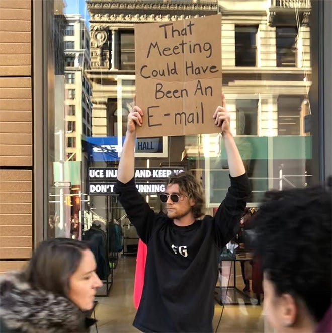

A Developer's Guide to Surviving Sh*t Project Management
Jennifer Wadella

Jennifer Wadella
@likeOMGitsFEDAY
- VP Frontend Engineering at Bitovi
- Angular GDE, Cohost of the Angular+ Show
- Kombucha brewin' crazy plant lady

This talk may contain strong language, harsh truths, and serious passion.

Goals for This Talk
- Address Common Problems with Project Management
- Teach the Basics of GOOD Project Management
- Give You Strategies for when Project Management Goes Off the Rails
Project management is the use of specific knowledge, skills, tools and techniques to hamper developer productivity.
Project management is the use of specific knowledge, skills, tools and techniques to deliver something of value to people.
Common Project Management Problems
Too much time in meetings
Requirements changing on the fly
QA reporting back bugs that aren't bugs
Sprints resulting in missed deadlines and deathmarches
Bugs missed in planning that resulting in overtime work
Too little or too much process
Micromanaging
Burn down chart driven development
Unable to determine project timelines
Stand-ups so long your chair thinks you ghosted it every morning
In order to win the game, you have to know the rules.
Project Management Approaches
- Waterfall
- Agile
- Anarchy
Waterfall
Waterfall project management is a linear approach to delivering a project where phases are distinct & must be completed sequentially.
Agile
Agile project management is an iterative approach to delivering a project throughout its life cycle.
Manifesto for Agile Software Development
We are uncovering better ways of developing software by doing it and helping others do it.
Through this work we have come to value:
Individuals & interactions over processes and tools
Working software over comprehensive documentation
Customer collaboration over contract negotiation
Responding to change over following a plan
That is, while there is value in the items on the right, we value the items on the left more.
Agile Frameworks
- Kanban
- XP
- SCRUM
- SAFe
They share Agile philosophy, roles, and sometimes ceremonies.
https://badsoftwareadvice.substack.com/p/how-to-avoid-understanding-the-business
Kanban
Kanban is a framework that provides visibility to an entire process and is commonly used for agile and DevOps to drive continuous delivery and improvement.
XP
Extreme Programming (XP) is an agile software development framework that aims to produce higher quality software, and higher quality of life for the development team.
SCRUM
Agile is a mindset, SCRUM is a framework. SCRUM describes a set of meetings, tools, and roles that work in concert to help teams structure and manage their work.
Key Concepts of SCRUM
- Artifacts - product backlog, sprint backlog, increment(sprint goal)
- Events - sprint, Sprint Panning, Daily SCRUM/standup, Sprint Review, Sprint Retro
- Roles - product owner, SCRUM master, SCRUM development team
SAFe®
The Scaled Agile Framework® (SAFe®) is a system for implementing Agile, Lean, and DevOps practices at scale.
Survival Strategies
- Identify Your Project Management Methodology
- Advocate for Good Meeting Hygiene
- Don't Be Afraid to Propose Process Changes
- Understand Stakeholder Motivation
- Know your Tools
- Use Charts for Good, Not Evil
Strategy One
Identify Your Project Management Methodology

Framework Comparisons
XP
- Work in iterations that are one or two weeks long.
- Flexible to change features within their iterations
- Work in a strict priority order
- Engineering practices - test-driven development, the focus on automated testing, pair programming, simple design, refactoring
Kanban
- Work on priority tasks whenever they come in
- Constant stream of work without any bottlenecks
- A Kanban board visualizes all the work within the project.
Scrum
- Self-organized
- Cross-functional development teams
- Work in close collaboration with the customer & stakeholders to add value to every step of the process
- Targeting a goal of continuous improvement.
SAFe®
- Agile at scale
- Working with multiple agile teams
- Cross domain planning
- Prioritization around business value
"None of the Above" and "all of the above" are also options üò¨
Being Knowledgeable Around Management Methodologies Gives You Pushback Power
Project management should help software development productivity and provide visibility, not hamper and obscure it.
Strategy Two
Advocate for Meeting Hygiene

Meetings aren't Evil
When they're used effectively they can improve productivity
Keep Daily Standup to 15 Minutes
- Choose a consistent place and time
- Avoid the blocker rabbit hole - this is not a problem-solving meeting üôÉ
- Remember this is NOT a status meeting
- Developers inspect their progress toward the Sprint Goal
- Developers create a plan for the next working day
Meeting Coordinating Best Practices
- Ask "could this meeting be an email?"
- Create & send out an agenda ahead of time
- Outline topics
- Set a goal for the meeting outcome
- Ensure invite goes out to necessary people, and doesn't to people who don't need to be there
- Take notes during meeting (or select a scribe)
- Create action items, make sure anything to be done has an individual assigned to owning it’s execution
Gently Provide Guardrails for Meetings
"Could we table this discussion, and set another meeting to go more in depth with the people who need to be there?"
Use a Technical Decision Document
Capture key points of technical decision making discussions and save in your company wiki.
Own Your Calendar
Ensure your calendar is up to date, and politely but firmly maintain boundaries around it.
Set up blockers for focus time, or propose a weekly "office hours" for question-asking regarding tech.
Strategy Three
Don't Be Afraid to Propose Process Changes
Bring up Concerns/Changes in Retrospectives
What's going well?
What Should We Continue Doing?
What Should We Stop Doing?
Make Sure You HAVE a Retro
"I think if we had a retrospective to review our process and talk about things that went well and discuss things we could do better, it would improve our ability to meet X,Y, Z goals. I'll schedule a recurring meeting for us!"
"Process does not exist unless it is documented" - Jennifer’s first rule of Project Management.
Process should aid development & help people follow the same steps to handle issues. Process includes tools like internal wikis, issue trackers, version control, UX feedback, QA feedback, deployment and more. Process should be iterated on and improved to avoid repeated bottlenecks
Create the Definition of Ready
"Ready" means that stories are be immediately actionable. The Team must be able to determine what needs to be done and the amount of work required to complete the ticket for it to be considered ready.

Me when I'm not constantly begging for information about my assigned tickets every sprint because our team added 'requirements complete' to our definition of ready.
Create the Definition of Done
"Done" is an agreed-upon set of items that must be completed before a project or user story can be considered complete. It is applied consistently and serves as an official gate separating things from being “in progress” to “done.”
Create Workflows
A workflow can be defined as “orchestrated and repeatable pattern of activity”. Workflows must be created to execute on work. To create an appropriate workflow you may need to answer questions like:
How does the work that needs be done get described to the developer?
Are there mockups representing the work?
How are mockups delivered and described?
How can the developer verify the work has been completed?
How should a QA be able to test work?
How can acceptance criteria be created?
How should deployment work?
Is there user testing?
What happens if an issue is blocked?
Does code need to be reviewed in PRs?
Strategy Four
Understand Stakeholder Motivation & Build Trust
Who IS a stakeholder?
Any individual, group or organization that can affect, be affected by, or perceive itself to be affected by, an initiative

What Do Your Stakeholders Care About?
Timeline? Reopened tickets? Deployment times? Number of showstoppers?
What's Motivating Your Project Manager?
Who do they answer to? What are their concerns? What are their pressures?
The more you understand about your PMs motivations, the better you can help guide them towards better practices (and away from micro-managing)
Build Stakeholder Trust
- Make sure timelines are clear
- Call out blockers
- Give thoughtful demos
Strategy Five
Know Your Tools

Take the Time to Learn Your PM Tool
When You Understand Your Tool You Get:
- Visibility into bottlenecks
- Ability to shut down "the blame game"
- Better Foresight
- Ideas for process improvement
Strategy Six
Use Charts for Good, Not Evil

Gantt Chart
A Gantt chart provides you the timeline view of your projects. It allows you to visualize how different tasks/activities of a project are connected with each other and how they fit in the overall timeline of the project.

Burndown Chart
A burndown chart shows the amount of work that has been completed in an epic or sprint, and the total work remaining. Burndown charts are used to predict your team's likelihood of completing their work in the time available. They're also great for keeping the team aware of any scope creep that occurs.


Charting Tools
- Best - Your Clients Project Management Tool (Jira, Trello, Radar, Github)
- Miro
- Lucidchart
- Good ol‚Äô Google Sheets (or Excel ü§Æ)
- MS Project
Is Our Current Project Management Approach Helping Us Reach our Business Goals for Shipping Software?
Questions?
Slides available at:
https://tehfedaykin.github.io/DevelopersGuideToProjectManagement
Need help with Project Management and supporting more effective development teams? Work with me! jennifer@bitovi.com